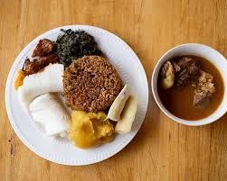
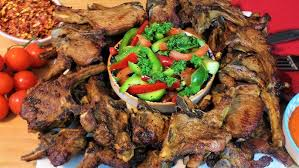
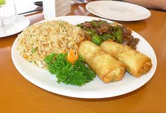

java house Kigali Heights
Java House Kigali Heights is a popular restaurant at Kigali Heights known for its great coffee, fresh meals, and relaxed modern atmosphere. It offers breakfast, lunch, and dinner with a mix of healthy and international dishes, making it a favorite spot for both casual dining and meetings.
🌟 Must-Try Dishes
- Full Java Breakfast - Eggs, sausages, toast, beans, potatoes Heavy, filling, very popular twist
- Burgers (especially Ben’s Burger) - Beef or chicken burgers + fries Good portion, fast service
- Nyama Platter (Grilled meat) -Chicken + beef skewers (brochettes style) More “local taste” compared to other meals
- Chicken Salad - Light, fresh, healthier option Good if you don’t want heavy food
- Pancakes + Coffee / Milkshake - Sweet breakfast or snack Their coffee and milkshakes are a big attraction
spots Restaurantn in kigali-heights
- Italian restaurant
- Riders Lounge Kigali
- 360 Degrees Pizza
- The Fork Kigali Heights
- Delizia Italiana



